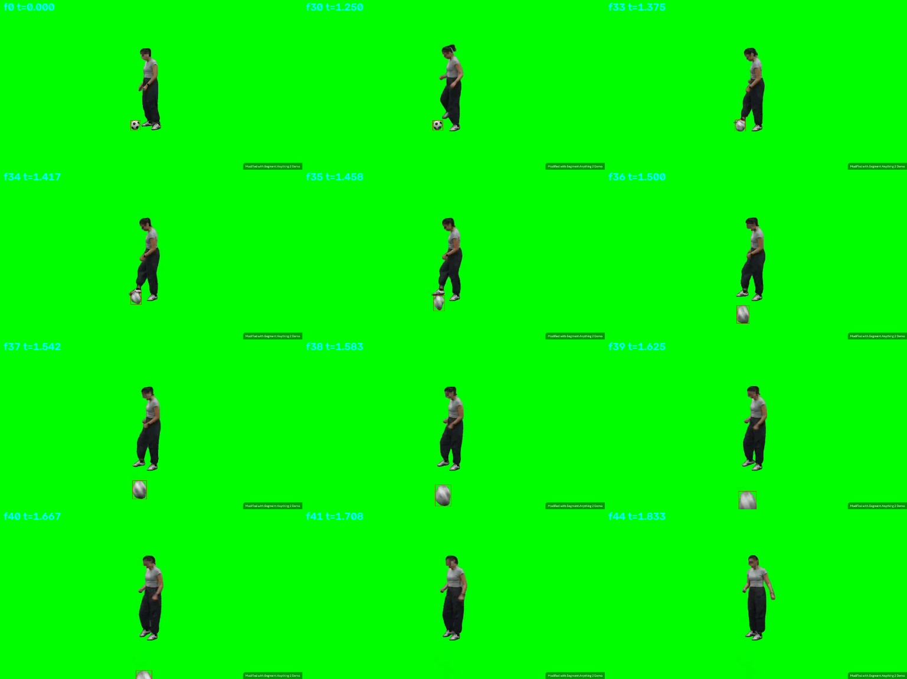
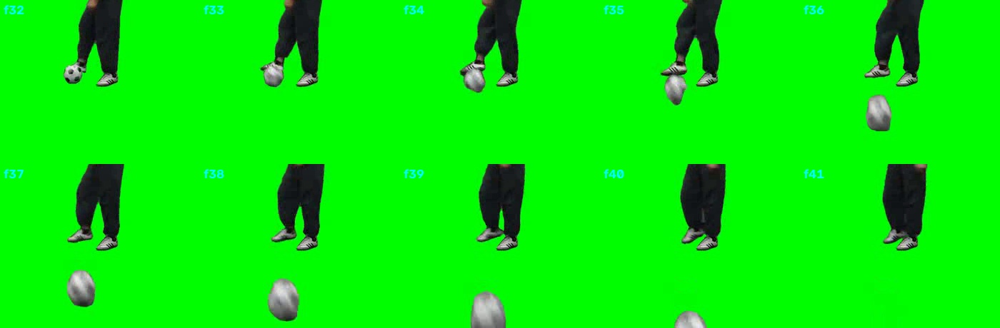
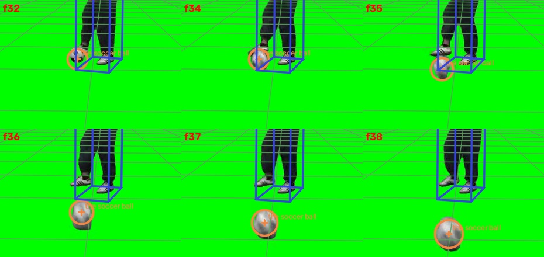
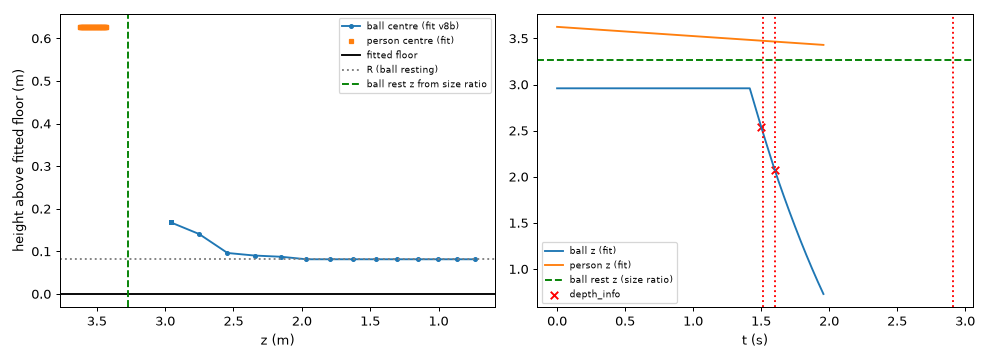

← 视频与问题 · 评估员逐视频报告（由 outputs/eval/*.md 生成）
captured_0041x 评估报告（evaluator，2026-10-24）
主因层：尺度（实验室焦距先验 650 px 固定强投票）+ 拟合（ballistic 静止相浮空、人无深度锚点）；q1/q2 真值存疑 根因：本视频没有任何物体给出焦距的度量证据，scene_fit / 几何都退回 lab 焦距 650（权重 10），而无答案的证据（标准尺寸球 + 深度锚点、人身高）都指向本视频 f≈450–560；同时 ballistic 模式把起踢前的静止位置等同于 p0(t_on)，球在静止相悬空 0.087 m、比尺寸推出的位置近 0.3 m，人又没有深度锚点，结果球–人分离 0.5–0.7 m。q1（0.6116）和 q2（0.198）与数据集自己的 prior（5.21 m/s）、depth_info（径向 0.47 m）和画面都对不上，不应追。
结果来源：outputs/val_tools_routed.csv；3D 场景 outputs/scene_fit_eval/c_support_v8b/captured_0041x.json（v7 对照结果几乎相同：16.39 / 0.481 / 1.082）。
题目表
| 题 | 答案 | 几何 | 场景值（fit，conf） | Qwen | 最终 | MRA | 主因层 |
|---|---|---|---|---|---|---|---|
| 足球直径 cm | 17.5 | 14.20 | 16.30（0.18） | 22.0 | 22.0（vlm） | 0.7 | 尺度（f=650）+ 观测（运动模糊）+ 路由（D3 固定用 Qwen，Qwen 给典型 5 号球） |
| 1.5–1.6 s 位移 m | 0.6116 | 0.465 | 0.475（0.18） | 0.47 | 0.47 | 0.7 | 真值存疑（各来源一致约 0.47–0.52） |
| 1.5 s 球到人距离 m | 0.198 | 0.555 | 1.096 中心 / 0.865 最近（0.18） | 0.5548（照抄几何） | 0.5548 | 0.0 | 真值存疑；另有拟合问题（人的深度、静止相浮空） |
画面与链路证据
叠加图（scratchpad）：
- 原帧网格（SAM2 框）：
captured_0041x/frames_grid.jpg
- 球局部 f32–f41：
captured_0041x/ball_crops.jpg
- v8b render_overlay（t=1.25/1.42/1.50/1.58/1.67/1.83）：/tmp/claude-1017/-data-yumenghe-QuantiPhy/823507c7-069c-4584-aec0-69d0a1b126a7/scratchpad/eval_0041x/overlay_v8b.jpg
- v8b 球附近放大 f32–f38：
captured_0041x/overlay_ball_zoom.jpg
- 侧视图（高度–z、z–t，含 depth_info 和由尺寸比推出的静止位置）：
captured_0041x/sideview_fit.png


画面事实：绿幕合成（bg=X，is_masked）。球在 f0–f32 静止，紧贴人的踢球脚，框 28×28 px，中心约 (382,354)，底边 y=368；人的脚底 y=371。f33–f35（1.375–1.458 s）脚触球，f36 起球离脚、快速朝镜头滚动。框被运动模糊沿 y 拉长：f36 为 36×51，f38 为 44×60；f39 起贴下边，f41 起出画。人全程站在原地（脚底 y 恒为 371），f36 时两只脚都已落地。球离脚后画面里看不到弹起，几何上它的中心高度约等于半径，也就是贴地滚或擦地滑。
- 解析：三题的量、物体、时刻都解析正确。q2
surface=None（无限定词），按中心距处理。 - 清单：三个球名合并成 the soccer ball，人单独一个节点，没有问题。
- 跟踪：tracks / tracks_qwen / tracks_v7 的框都对；visible [0,1.667]、out_of_frame [1.708,2.0] 与画面一致（agree=1.0）。tracks 里 "the soccer ball" 在 f41–48 有一段跳到人身上的框，已被 "frames on another object's box dropped" 丢掉。
- 场景图：grid 版判 ball on floor 0–1.58、airborne 1.58–2.0；per-frame 版判 on 0–1.333、airborne 1.333–2.0。画面上球离脚后是贴地运动（见下面的高度估计），"airborne" 不准，不过对三题数值影响很小。场景图里没有物体与物体之间的接触关系（"球在人脚边，直到被踢"）。
- 拟合：
- 焦距：stage A 只有一个投票
focal votes=[650]（f_source=lab_prior）。几何流水线用速度 prior 估出 f=136，判为不合理，同样退回 650。原因是球几乎沿视线运动；而且对纯径向运动，画面里的速度 dv = (v−cy)·|Ż|/Z 与 f 无关，所以 f 在这里本来就观测不到。 - 平面：没有地平线，平面来自 22 个 dense-depth 接地点。可这些点取自绿幕上的 Depth Anything，而深度对齐只靠球的两个锚点（a、b 恰好两点定死，
LOO median err None），平面 dist=0.83 没有独立证据。 - 球（ballistic）：t_on=1.4167，p0=(−0.20, 0.55, 2.96)，静止相就等于 p0。静止时球心高 0.168 m，而 R=0.0815，所以球底悬空 0.087 m（contact h_med 0.0866）。投影直径 35.8 px，实际框 28 px。只用 depth_info 和像素宽度比（与 f、D 都无关），静止位置应在 z≈2.544×36/28≈3.27 m，拟合给的是 2.96。事件 bounce@1.511 / land@1.600 是球从这个虚假高度落回地面造成的，画面里没有弹跳。
- 人：mesh-up 后站立，脚在平面上（中心高 0.627 = H/2），但没有深度锚点，Z0=3.62，并以 0.10 m/s 朝镜头漂移（画面里人不动）。H=1.25 m，对成年人来说过矮。人的框在 x 方向与轮廓重合，框的底面投影比鞋底低约 15–20 px。静止时球贴在人脚边，拟合却让两者在深度上相差 0.66 m（2.96 对 3.62）。
- 路由：三题都是 D3，固定用 Qwen。q0 中 Qwen 给 22（典型 5 号球），没有采信几何的 14.2；q2 中 Qwen 照抄几何的 0.5548。fit conf 0.18（rms_rel 0.30）把这个场景正确地标成了低置信。
三题各自的链路
q0 直径（答案 17.5）
- 几何：36 px（f36 的框宽）× 2.544 / 650 = 14.1 cm。用宽度是对的，因为模糊沿 y。
- 拟合：16.3 cm。f 同样是 650，但球体是对整个框拟合的，被模糊拉长的高度把 D 撑大约 16%（只用宽度时同样 f 给 14.1）。两个误差方向相反，抵消后才看起来接近答案。
- 由锚点直接定出 f·D：f36 为 36×2.544=91.6，f38 为 44×2.074=91.3，两帧非常一致。所以 D 完全取决于 f：f=650 时 D=14.1 cm，f=520 时 D=17.6 cm。
- 不用答案的焦距证据都指向 f<650：
- captured_0061 的篮球（标准 7 号，24.3 cm）配锚点，f≈430–470；
- captured_0034as 的网球（ITF 6.54–6.86 cm）配锚点，f≈500–620；
- 本视频的人（框高 241 px，脚与静止球同深度 3.27 m，见上）：f=650 时 H=1.19 m，f=520 时 1.42–1.49 m（人弯腰低头）。成年人身高说明 f≲560。
- 650 这个值的来源：calibrate.py 最初的注释写的是三个静态 prior 场景测得 580 / 604 / 737，本身就有 ±12% 的离散。
q1 位移（答案 0.6116）
- 拟合 0.475，几何 0.465，Qwen 0.47。
- 不用答案的重建（球中心取 x 中心、y = 顶边 + 宽/2，避开模糊）：f=520 或 650，锚点按 z 或按欧氏距离，四种组合给出 0.474–0.498。
- 数据集自己给的信息：径向 Δ|d| = 2.544−2.074 = 0.47 m；prior 速度 5.21 m/s × 0.1 s = 0.52 m。
- 要达到 0.6116，需要 0.39 m 的横向位移。在 Z≈2.3 m 时，这相当于画面里约 70–90 px 的横向运动，而实际只有约 10 px（y 方向的移动基本是接近镜头引起的透视）。所以真值与 prior、depth_info、画面三者都不自洽，判为真值存疑。注意：如果把时间往前挪约 1 帧（踢球瞬间，球速约 6–7 m/s），这个真值就说得通。
q2 球–人距离（答案 0.198）
- 拟合：中心 1.096，最近 0.865。人放得太远（3.47 对约 3.27），球心又比人的中心低 0.57 m。
- 不用答案的重建（人的脚与静止球同深度，球在 1.5 s 时 z=2.544）：中心距 0.90–1.02，最近表面（人体按半径 0.12 的竖直段近似）0.49–0.54。
- 0.198 既不是中心距，也不是 1.5 s 时的最近表面距离。它只和约 1.42–1.46 s（f34–f35，球刚离脚）的最近表面距离吻合。所以 q1、q2 的真值像是取自比 depth_info 早约 1 帧的时刻，判为真值存疑，不建议为它改语义或改时刻。
"无限定词的两物体距离"默认取中心还是最近表面：统计
- 验证集中能判定语义的无限定词物体–物体距离题共 3 题，全部支持中心距：
- internet_0027 初始距离：中心 13.97 cm，表面 8.04 cm，答案 14.74；
- internet_0027 最终距离：中心 16.94 cm，表面 10.90 cm，答案 18.04；
- internet_0019 传球者–接球者：s2d 中心 4.40，答案 4.52。
- 唯一"像最近表面"的就是本题，而本题对两种语义都不自洽（见上）。
- 带 minimum / smallest / shortest / nearest / closest 限定词的题，parse 已给出 surface=nearest（val simulation_0009，test 中 0007/0008/0009/0124/0126/internet_0014/0052/0056/0074 等），这部分没有问题。
- 测试集里同类的无限定词"球到人"题有 6 道：captured_0041 / 0041s / 0041x 和 captured_0047 / 0047s / 0047x。它们会跟着默认值一起变，而验证集里没有任何可靠证据支持把它们改成 nearest。
- 结论：默认保持中心距，scene_fit 继续输出 distance_si 的 center 和 nearest 两个值，不加"人类物体自动取最近表面"这类规则。
逐条问题（按影响面排序）
- 实验室焦距是一个固定的强先验，而且是本视频唯一的焦距投票
- 现象：f_source=lab_prior，votes=[650]（权重 10）。本视频的锚点给出 f·D=91.5，而不用答案的证据给出 f 在 450–560。
- 根因层：尺度（scene_fit focal votes；calibrate 的 FOCAL_PRIOR_PX）。
- 同一缺陷影响：用了锚点和固定 f 的实验室尺寸题普遍偏小（只用来定位，不用于调参）。captured_0013 的 5 个尺寸分别是真值的 0.68–0.96；captured_0061 的两个直径是 0.71 / 0.90；captured_0034as 是 0.78 / 0.89；本视频是 0.81（只用宽度时）。
- 建议（qp-code-3d）：
- 对每个视频收集不依赖答案的焦距投票：(a) 非提问目标、有标准尺寸的物体（篮球、网球、乒乓球、足球号数不确定所以不用）配深度锚点或深度绑定；(b) 人的身高（1.55–1.85 m 区间投票），前提是人的深度能通过接触关系绑到有锚点的物体上（见第 4 条）；(c) 测试集里同一 scene 的兄弟变体（0041 / 0041s / 0041x 是同一台相机、同一次拍摄）共享 f 和平面。
- lab 先验的权重按它自己的离散度（580–737）设，不再是唯一投票。
- 在 quality 里加入 f 的不确定度：依赖 f 的尺寸题，在 f 只来自 lab 先验时降低 conf。
- 验收：输出每个实验室视频的 f 来源和投票表；不使用 answer 列；在实验室 S3/D3 的尺寸题上看偏差方向是否从系统性偏小变为有正有负。
- ballistic / onset 模式下，静止相被绑在 p0(t_on) 上：静止的球悬空，位置也和静止帧的尺寸冲突
- 现象：静止时球心高 0.168 m（R=0.0815），z=2.96，投影 35.8 px 对实际 28 px；凭空多出 bounce@1.511；场景图明明写着 on floor 0–1.58（per-frame 版 0–1.333）。
- 根因层：拟合（scene_fit ballistic 的 onset 与支撑分阶段）。
- 同一缺陷影响：所有"先静止、后被踢 / 推 / 抛"的物体（captured_0061 的三个球、0021x、0034as、0027s），以及所有 onset 模式。
- 建议（qp-code-3d）：
- 起动前的静止相按场景图分阶段处理：用 on(floor, 0–t_on) 把球底约束在平面上，静止位置单独作为参数（例如 p_rest，起动时允许一段很短的冲量过渡 / 脚接触段），静止帧的尺寸残差按帧数加权。
- 在 quality 里加"支撑一致性"：场景图写 on、但重建出的高度大于容差的帧数比例。
- 验收：本视频静止相的高度≈R，投影尺寸误差 <5%，不再出现无画面依据的 bounce；其他 ballistic 视频的拟合值在噪声内不变差。
- 运动模糊把球体尺寸撑大
- 现象：f36 的框 36×51，f38 为 44×60；fit 的 D 比只用宽度时大 16%。scene_fit 的 focalfix 分支里也写着
"D": max(w, h)（scene_fit.py 第 1520 行附近），对模糊的球同样会偏大。 - 根因层：观测（scene_fit 球体的框残差；必要时用 extents2d 掩码的短轴）。
- 同一缺陷影响：快速运动的球都会受影响（0061、0021x、0034as、0027s；实验室 24 fps，模糊很常见）。
- 建议（qp-code-3d；如需掩码短轴接口，转 qp-tools / qp-code-2d 的 extents2d）：
- 对 sphere，当相邻帧的像素位移超过尺寸的约 20% 时，只用垂直于像素运动方向的那一维（或 min(w,h)、掩码椭圆的短轴）作尺寸观测；
- 优先用清晰的静止帧（配合第 2 条的静止相位置）。
- 验收：本视频 D 不再被高度方向拉大（同一 f 下应与按宽度算的 14.1 一致）；各视频输出 D 的逐帧宽/高比统计。
- 绿幕视频的深度与平面没有依据；人没有深度绑定
- 现象：22 个 dense-depth 接地点来自绿幕上的单目深度，只靠两点对齐、没有交叉验证；人 anchors=0，Z0=3.62 并带着虚假漂移；场景图里没有"球在人脚边"这样的物体–物体接触。
- 根因层：拟合（scene_fit 平面锚点的选择）＋ 场景图（缺少物体–物体接触关系）。
- 同一缺陷影响：所有 bg=X 的蒙版视频（val 0021x、0041x；test 中大量 *x 变体），以及人与物体有接触的场景（0047 系列、0052 系列等）。
- 建议：
- qp-code-3d：is_masked / bg=X 时不用 dense-depth 的接地点拟合平面（或把权重压到很低），改用物体自身的接触约束；测试集按 scene 从 bg=C 的兄弟变体继承平面和 f。
- qp-tools：场景图增加物体–物体的
contact/touching关系（例如 "the soccer ball touching the person's foot, 0–1.4 s"），带时间区间；scene_fit 用它把两个物体的深度绑在一起（容差 = 两者尺寸之和的一半）。 - 验收：本视频静止球与人脚的深度差 <0.15 m；输出 json 里能看到平面来源（depth / contact / sibling）。
- depth_info 的
distance_X_camera被当成 z（光轴深度）用 - 现象：fit3d 的锚点残差是
P[2] − Z_k。本视频按欧氏距离应为 |d|=2.627，现在却把 z 拟合成了 2.544，差 3–5%。 - 根因层：尺度（fit3d 的 depth_anchors 残差；calibrate 里 Z 的用法）。
- 同一缺陷影响：val 中 33 个锚点的 |d|/z 中位数 1.017，9 个超过 1.03，最大 1.131（captured_0061 的足球 0.9 s）；simulation_0060（白车 1.077）、0009 也超过 3%。
- 建议（qp-code-3d；calibrate 与 geometry 由 coordinator 定归属）：锚点残差改为 ‖P‖ − d_k（或按该帧框中心的射线把 d 换算成 z）。这是语义修正，不是调常数。
- 验收：输出每个锚点的 |d|/z；验证集在噪声内不变差即可采用。
- 路由：D3 尺寸题 Qwen 只给典型尺寸
- 现象：Qwen 给 22 cm（5 号球），几何是 14.2；q2 照抄几何的 0.5548。
- 根因层：提示与路由。
- 判断：在第 1 条修好之前，几何和拟合本身就偏，这里不建议改路由；fit conf 0.18 也正确地标成了低置信。第 1 条之后，可以重新评估"D3 尺寸题在 f 有独立证据时用 fit 值"。负责人 qp-tools（route），待第 1 条完成后再看。
- 真值存疑（不改逻辑迎合）
- q1 的 0.6116 和 q2 的 0.198，与 prior（5.21 m/s）、depth_info（径向 0.47 m）以及画面都不自洽；两者都像是比 depth_info 的时刻早约 1 帧取的值。
- 建议写进 in_progress.md 的"真值存疑"一节。
对照 in_progress.md
- "三个球名合并 / 人站立 / 出画一致 / visibility" 都已修，本次复核确认生效（visibility agree=1.0）。
- "--motion ballistic" 已交付，但第 2 条（静止相悬空、虚假 bounce）是新问题，尚未在修。
- "GT 0.198 疑为最近表面"：本次给出了更强的反证——1.5 s 时最近表面距离也有约 0.5 m，所以默认语义不应改。
- 第 1、3、4、5 条都不在清单里，是新报的问题。